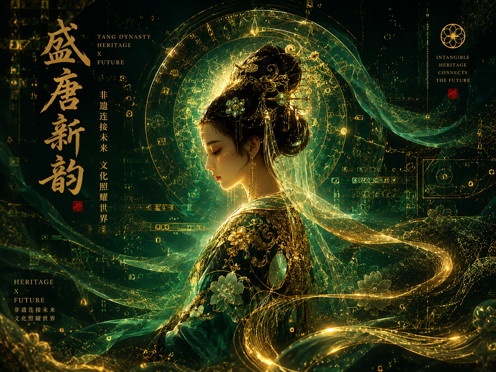
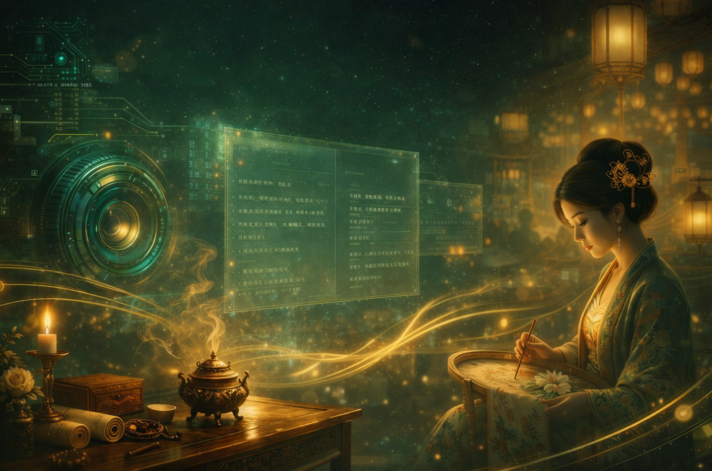
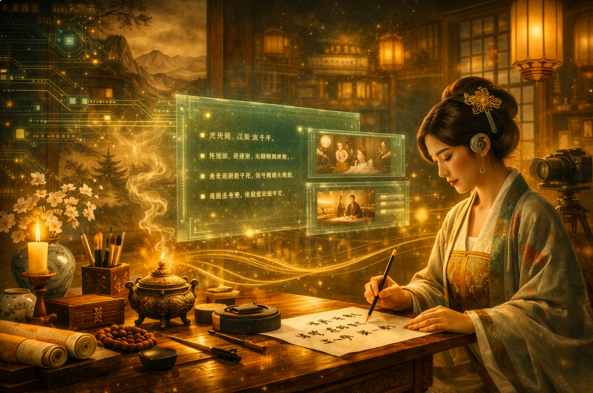
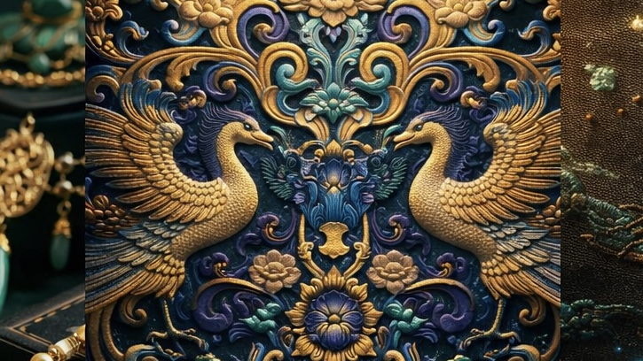
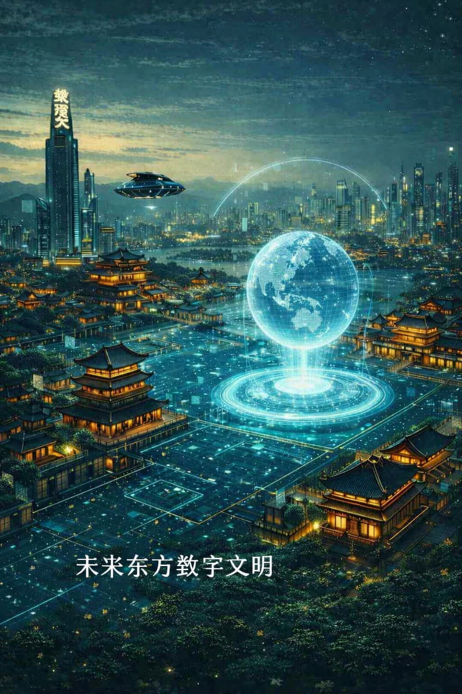

一句灵感，就足以让纹样、材质与东方构图重新组合
当非遗进入海报生成系统，它不该被磨平成普通模板，而应继续保留自身的文化气息、材质感与时代情绪。
输入一句主题，例如：“盛唐花钿与未来玉石光影”。
AI 将输出符合世界观的文创海报概念与画面描述。
当技艺走出展柜，它也开始拥有更多讲述自己的方式。 一段故事可以化作影像，一枚纹样可以成为新的设计，一份传承记忆也能够被重新书写。那些来自过去的灵感，在这里继续延展出新的模样。

当非遗进入海报生成系统，它不该被磨平成普通模板，而应继续保留自身的文化气息、材质感与时代情绪。
输入一句主题，例如：“盛唐花钿与未来玉石光影”。
AI 将输出符合世界观的文创海报概念与画面描述。

同样一门手艺，换一种讲述方式，便会呈现出不同的风景。 光影的变化、人物的停留与细节的展开，共同串联起一个完整的故事，让原本静止的记忆重新拥有流动的生命力。
自动生成分镜、运镜建议与旁白节奏。
帮助非遗内容从“资料”变成“可传播的故事”。

不是用工业化文案抹平文化差异，而是帮助传承人把复杂技艺翻译成今天依然愿意被阅读、被理解、被转发的语言。
可生成品牌故事、展览标题、活动文案与产品介绍。
让非遗表达保持温度，同时拥有传播效率。
这里展示的不是“SKU”，而是未来非遗如何以作品形式重新进入生活。每一件文创都更像漂浮在展厅中的艺术装置。
将玉石、金属与未来东方结构重新组合，让佩戴成为文化延续的一种方式。

让传统纹样不只复用过去，而在新的排布和媒介中继续生长。
当针脚与光效、材质与屏幕相遇，绣面也能成为新的数字作品表面。
这里的长安并未远去。 熟悉的纹样、灯影与街市气息仍然留存在城市之中，只是以新的面貌继续生长。过去与未来在同一片屋檐下相遇，让技艺、生活与想象拥有了更多延展的可能。

在数字丝路与东方美学交织的未来长安，文化不再静止，而是以数据的方式重新生长。
非遗纹样、唐风建筑、数字人传承者共同构成一座可触摸、可漫游、可对话的文明空间。
这里的每一次点亮，都是传统与科技的再次相遇。